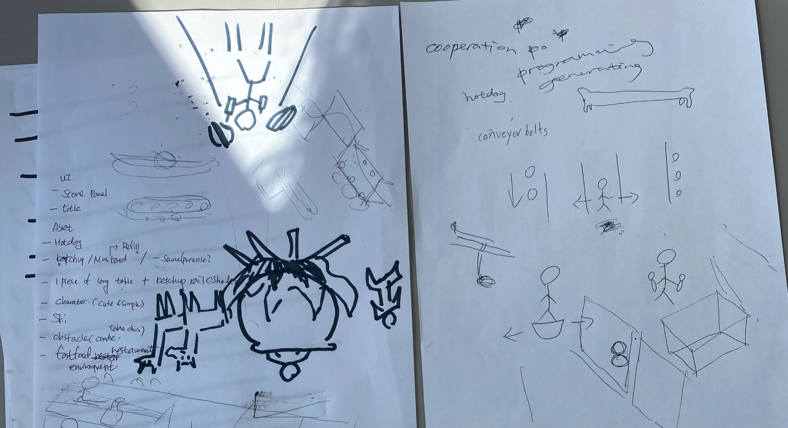

Asymmetric Hardware Co-op — splitting locomotion and manipulation between two players
Designed an intentionally challenging cooperative loop that forces communication by splitting locomotion and manipulation between two players using completely different hardware.
Full Experience
Designing an intentionally challenging cooperative loop that forces communication by splitting locomotion and manipulation between two players.
Intentional Friction for Social Interaction: Distributed the cognitive load by assigning the foot controller (movement) to Player A and the hand trackers (object manipulation) to Player B. This required them to constantly communicate to navigate and survive.
Rapid Balancing: Iterated daily on movement speed and interaction bounding boxes based on playtests to ensure the "frustration" translated into fun, engaging social cooperation rather than an unplayable experience.
